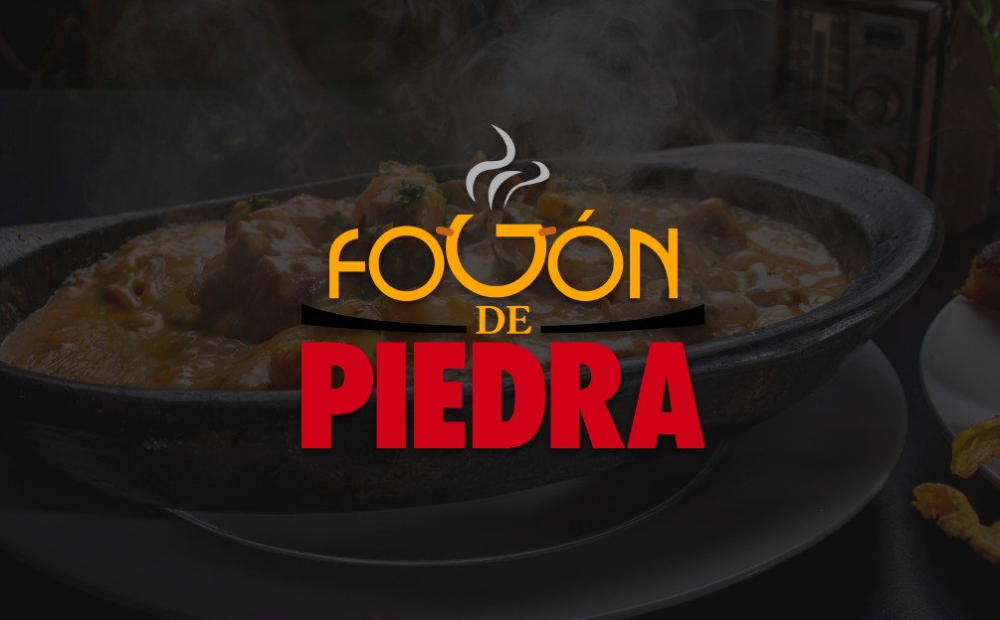
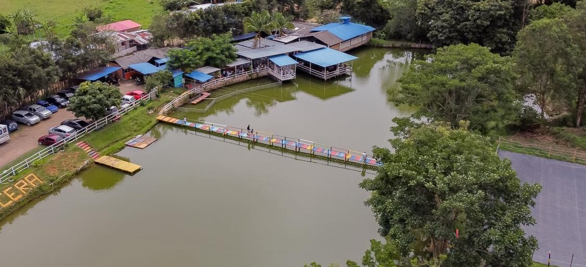

Gastronomía de Pitalito
Pitalito es reconocido por su rica gastronomía, donde los visitantes pueden disfrutar de platos típicos del Huila y experiencias culinarias únicas. Entre los restaurantes destacados se encuentran Fogón de Piedra y La Pecera, lugares que combinan tradición, sabor y un ambiente acogedor.
Fogón de Piedra

Restaurante reconocido por su comida tradicional huilense preparada en fogón de piedra.
Ver másLa Pecera

Un restaurante popular en Pitalito donde se destacan platos típicos y una experiencia gastronómica única.
Ver más